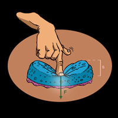
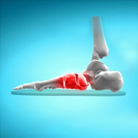

Сила пружності. Деформація кісток

Сила пружності. Деформація
Зміну форми чи розмірів тіла називають деформацією. Сила пружності – це сила, яка виникає під час пружної деформації тіла і напрямлена протилежно напрямку зміщення частин (частинок) цього тіла в процесі деформації.
Причина виникнення деформації полягає в тому , що під дією сил, прикладених до тіла , його різні частини рухаються по – різному й у результаті частини тіла зміщуються одна відносно одної. За характером зміщення частин тіла одна відносно одної розрізняють деформації стиснення , розтягання , зсуву , вигину, кручення.
Деформації розтягнення та стиснення характеризуються фізичними величинами видовження та відносного видовження. Видовження Δl - це фізична величина , яка дорівнює зміні довжини тіла при деформації розтягнення або стиснення:Δl = l – l0
де l - довжина деформованого тіла ; l0 – початкова довжина тіла. Відносне видовження Δl – це фізична величина , яка дорівнює відношення видовження Δl до початкової довжини тіла: ε=Δl/l0·100
Стан деформованого тіла характеризують фізичною величиною, яка називається механічною напругою.
Механічна напруга σ – це фізична величина, яка харарктеризує деформоване тіло й дорівнює відношенню модуля сили пружності Fпруж до площі S поперечного перерізу тіла. σ=F/S
Одиниця механічної напруги в СІ – паскаль (1 Па =1 Н/м2).
Експериментально встановлено, що механічна напруга залежить від відносного видовження. Цю залежність виражає закон Гука. У випадку малих пружних деформацій розтягнення та стиснення механічна напруга · прямо пропорційна відносному видовженню ε: σ=Еε
де Е – це модуль Юнга (модуль пружності).
Відносне видовження ? – величина, яка не має розмірності, тому одиниця модуля Юнга в СІ – паскаль (як і одиниця механічної напруги).
Існує ще одне формулювання закону Гука: У випадку малих пружних деформацій розтягнення та стиснення виникає сила пружності Fпруж, яка прямо пропорційна видовженню тіла і діє в напрямку, протилежному напрямку зміщення частин(частинок) тіла під час деформації: Fпруж=-kx
Де k - жорсткість тіла; x - зміщення кінця тіла.
Знак «-» показує, що сила пружності завжди направлена в бік, протилежний напрямку зміщення.
Система органів опори і руху
До системи органів опори і руху відносять скелет та м‘язи, які ростуть і функціонують у тісному зв‘язку. Скелет є опорою і захистом усього організму й окремих його органів. Наприклад, череп захищає головний мозок, грудна клітка і прикріплені до неї м‘язи захищають серце і легені. Багато кісток скелета є потужними важелями, які за допомогою м‘язів виконують різноманітні рухи.
Скелет побудований з кісткової та хрящової тканин. Клітини кісткової тканини мають численні тонкі відростки, за допомогою яких з‘єднуються між собою. Кісткова тканина складається з пластинок, утворених кістковими клітинами, та мінералізованої міжклітинної речовини з колагеновими волокнами.
Розташування пластинок нагадує сітку.
Така будова надає кісткам великої міцності підчас стискання й розтягнення. Наприклад, стегнова кістка людини витримує при стисканні навантаження до 1,5 тонни, міцність кістки на розтянення більша, ніж у деревини дуба чи сосни(вздовж волокон), у 9 разів перевищує міцність свинцю та майже дорівнює міцності чавуну!
До складу кісткової тканини входять органічні(25%) та неорганічні (50%) речовини, а також вода (20%). Основою органічною речовиною кістки є колаген, він дуже еластичний і надає кісткам пружності. З мінеральних речовин у кістках найбільше солей кальцію і сполук фосфору.
Значення органічних і неорганічних речовин у кістках можна з‘ясувати за допомогою дослідів. Якщо кістку покласти на добу у 10% розчин соляної кислоти, то її мінеральні речовини розчиняться. Вона стане гнучкою і пружною, її можна буде зав‘язати у вузол. Коли кістку прожарювати на вогні, вода з неї випарується, органічні речовини згорять, і кістка стане дуже крихкою. Отже, органічні речовини надають кісткам гнучкості й пружності, а неорганічні-твердості й міцності.
У дітей кісткова тканина містить більше органічних речовин, ніж у дорослих. Тому скелет у них гнучкий, еластичний. За тривалих навантажень і неправильних положень тіла кістки скелета, особливо хребта, у дитини стають викривленими. Цікаво, що в тілі дитини налічується 300 кісток, а у дорослої людини-206. Це пов‘язано з тим, що до досягнення зрілого віку окремі кістки зростаються.
У 1889 році році відкривалася Всесвітня виставка.До її відкриття інженер Ейфель повинен був закінчити будівництво вежі, яка стала б символом Парижу. Але принцип конструкції Ейфеля не був новим. Патент належав природі: саме таке побудуванні трубчасті кістки стегна та гомілки. Виявляється, профіль вежі повністю збігається з перерізом трубчатих кісток. Природою давно « винайдені» конструкції, що забезпечують міцність за малої ваги: трубчасті перерізи кісток тварин, трубчаста будова багатьох рослин (пшениці, бамбука). Трубчасті кістки – приклад зменшення ваги конструкції, економії матеріалу без втрати їхніх механічних властивостей.

Деформації кісток
Механічні властивості кісток насамперед визначаються їхніми різноманітними функціями: опорна, рухова і захисна. Опорна-рухову функцію виконують кістки кінцівок і хребта. Захисну функцію внутрішніх органів несуть кістки черепа, грудної клітки, тазу Кістки рук і ніг за своєю будовою довгасті і трубчасті. Така будова забезпечує їхню міцність і легкість. Скелет дорослої людини важить усього 8 кілограмів, вага м‘язів у три рази більше.
Розрізняють чотири види механічного впливу на кістку: розтяг, стиск, вигин і крутіння.
Навантаження, що викликають розтяг, виникають при висах або під час утримання вантажу в опущених руках. Міцність кістки на розтяг дорівнює міцності чавуну (витримує напругу 150 Н/мм 2 ).
Навантаження, що створюють стиск кісток і хрящів звичайно діють на тіло при вертикальному положенні ( сила ваги і тиск опори.).При стиску міцність кісток ще вища ( 16000-18000Н).
Навантаження, що викликають вигин, виникають, коли кістки виконують роль важелів, для утримання вантажів , сили 12000 Н недостатньо, щоб зламати стегнову кістку.
Навантаження, що створює крутіння, найчастіше зустрічаються при обертальних рухах кінцівок. Особливо великі припустимі механічні навантаження у спортсменів. Систематичні тренування приводять до гіпертрофії кісток-у штангістів потовщуються кістки ніг і хребта, у футболістів - зовнішня часина кістки плюсни, у тенісистів-кістки передпліччя і т. ін.. Найпоширенішими деформаціями кісток є деформації кісток хребта та стопи. Як ви знаєте, стопа людини має бути пружною, нагадувати склепіння.
Якщо вона рівна, це ознака плоскостопості, яка буває вродженим або набутим унаслідок носіння надто тісного чи просторого взуття , на дуже високих підборах або без них. Причиною цього захворювання є нетренованість м‘язів ніг чи велике перевантаження на стопу, внаслідок чого вона деформується
Викривлення хребта – сколіоз виникає переважно в дитячому та юнацькому віці, коли в хребцях та інших кістках грудної клітини ще багато хрящової тканини. Найпоширенішими причинами цих вад є недотримання гігієнічних правил сидіння за партою, погане освітлення, невідповідність висоти парти зросту учня, постійне носіння важкого портфеля в одній руці.